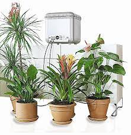

What we offer
Water Treatment Technology is a high-tech enterprise specialized in
various water processing devices. Aside from these individual products,
which cover a number of types
and series, we can also help with related comprehensive engineering projects.
Thanks to our hard work and dedication upon our founding,
we are now one of the fastest-developing water treatment equi

Automatic Plant Watering System

Hort Zone